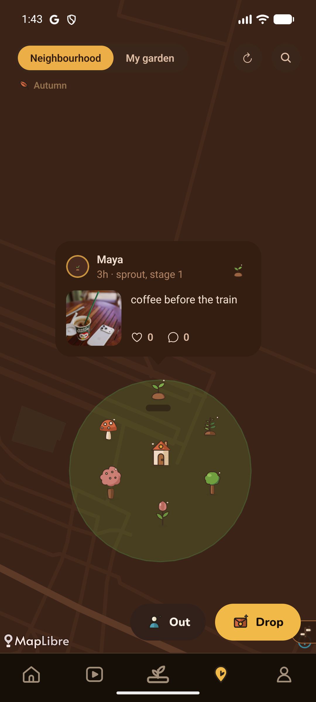
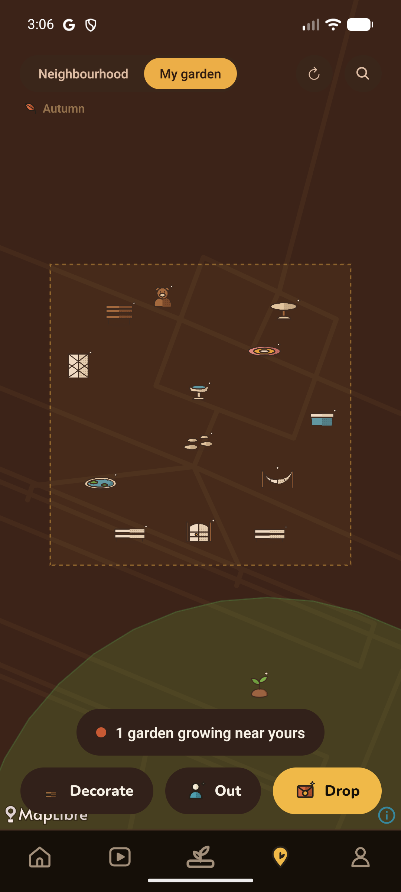
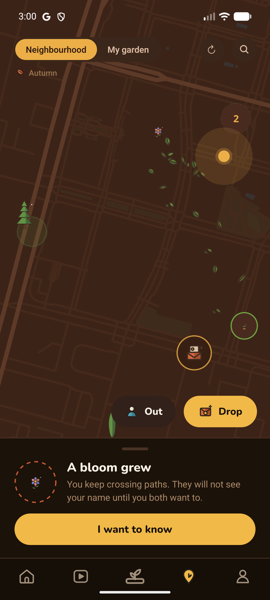

You keep crossing paths.
Yard notices.
A bloom grows between your gardens. Neither of you learns who the other is until you both want to know.
iOS · Android · Web
A bloom grows between your gardens. Neither of you learns who the other is until you both want to know.


